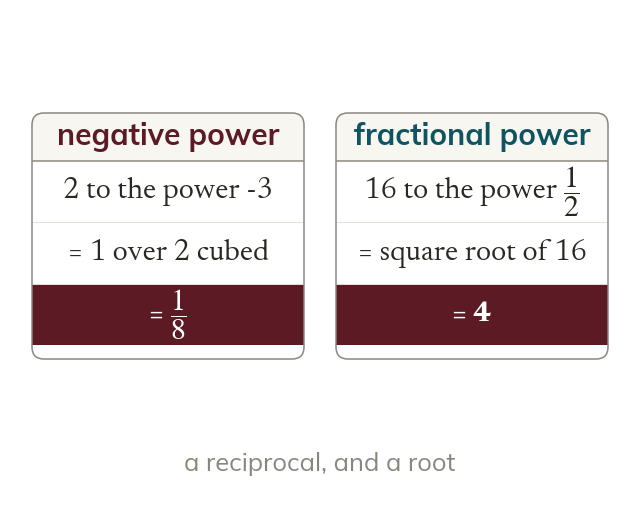

Negative and fractional powers
A negative power means a reciprocal. A power of one half means a square root. Neither makes the number negative or halved.
A negative power means a reciprocal, and a power of one half means a square root. Neither makes the number itself negative or halved.